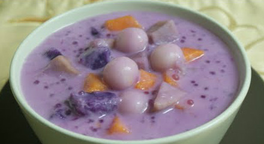

Ginataang Halo-Halo Recipe

Ingredients:
- 1 cup coconut milk
- 1/2 cup coconut cream
- 1/2 cup sweet potato, peeled and diced
- 1/2 cup taro (gabi), peeled and diced
- 1/2 cup jackfruit, sliced
- 1/4 cup saba bananas, sliced
- 1/4 cup tapioca pearls (sago), cooked
- 1/4 cup sweetened red beans (optional)
- 1/4 cup sugar (adjust to taste)
- 1/4 tsp vanilla extract (optional)
- Pinch of salt
Instructions:
- In a large pot, combine coconut milk, coconut cream, and a pinch of salt. Bring to a simmer over medium heat.
- Add the diced sweet potato and taro. Cook for about 10-15 minutes, or until the root vegetables are tender.
- Add the jackfruit, saba bananas, and cooked tapioca pearls. Stir gently to combine.
- Continue cooking for another 5 minutes, allowing the flavors to meld together.
- Stir in the sugar and adjust sweetness to taste. Add vanilla extract for extra flavor if desired.
- If using, add the sweetened red beans and mix well.
- Once everything is heated through and the mixture has thickened slightly, remove from heat.
- Serve warm or chilled in bowls. Enjoy your Ginataang Halo-Halo!
Back to Menu